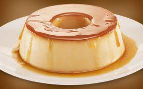

Pudim

Learn how to make this smooth condensed milk pudding with a perfect caramel sauce. It's delicious, inexpensive, and quick to prepare! With its soft texture and unmistakable flavor, this dessert is a true temptation for lovers of traditional sweets. Easy to prepare with simple ingredients, pudding is a perfect option to sweeten any special occasion.
Ingredients (serves 8)
- Pudding:
- 1 can sweetened condensed milk
- 1 can milk (use the condensed milk can to measure)
- 3 whole eggs
- Caramel Sauce:
- 1 cup sugar
- 1/2 cup water
Preparation:
- Preparation: 5 minutes
- Cooking: 45 minutes
- Chilling: 15 minutes
- Pudding:
- First, beat the eggs well in a blender.
- Add the condensed milk and milk, and blend again.
- Caramel Sauce:
- Melt the sugar in a saucepan until it turns brown, then add the water and let it thicken.
- Pour the caramel sauce into a round mold and pour the pudding mixture over it.
- Bake in a medium oven for 45 minutes, with the round mold inside a larger one filled with water.
- Insert a fork to check if it's well baked.
- Let it cool and then unmold.